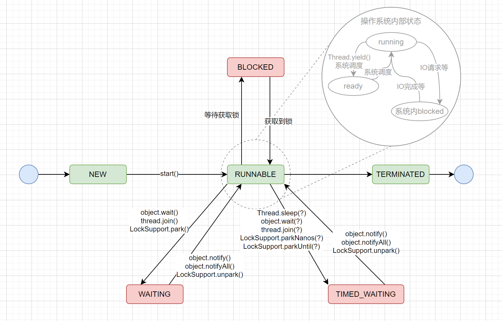
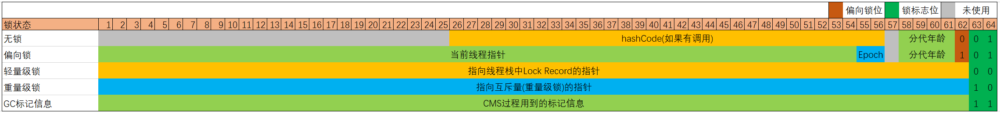
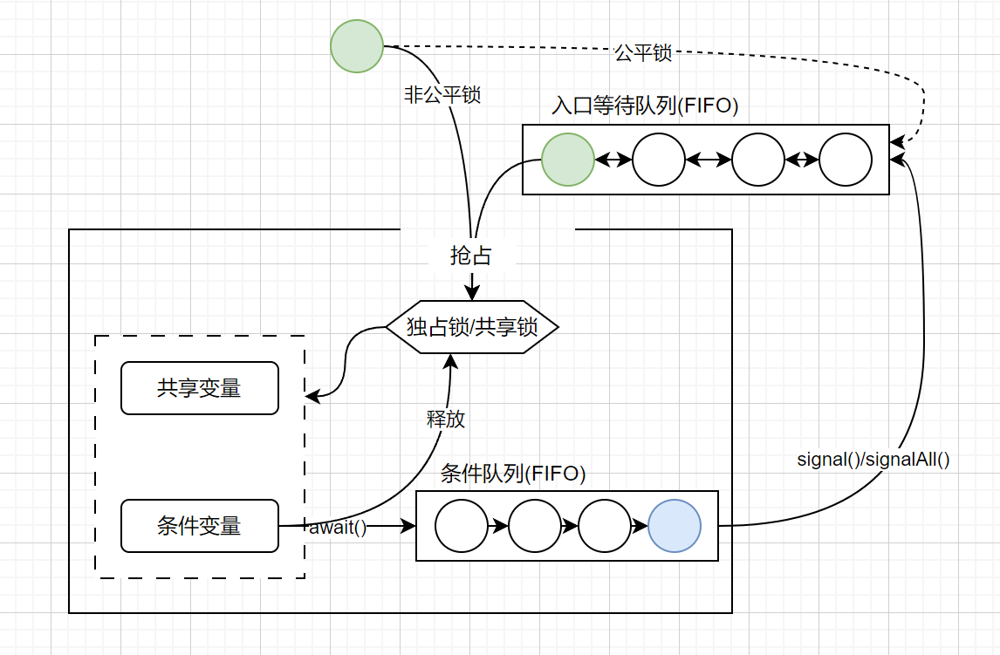

线程安全是指某个函数在并发环境中被调用时, 能够正确地处理多个线程之间的共享变量, 使程序功能正确完成.
引发线程安全问题的核心就是共享变量, 可以拆解为两个必要条件有两个:
防止出现线程安全性, 问题的切入点, 有三个:
package sch.frog.concurrency;
/**
* 线程安全问题演示
*/
public class ThreadSafeProblem {
public static void main(String[] args) throws InterruptedException{
// 数据竞争
DataRaceDemoObj dataRaceDemoObj = new DataRaceDemoObj();
playThreadSafeProblem(dataRaceDemoObj);
System.out.println("result is : " + dataRaceDemoObj.count);
// 竞态条件
RaceConditionDemoObj raceConditionDemoObj = new RaceConditionDemoObj();
playThreadSafeProblem(raceConditionDemoObj);
System.out.println("result is : " + raceConditionDemoObj.count);
// 线程安全
ThreadSafeObj threadSafeObj = new ThreadSafeObj();
playThreadSafeProblem(threadSafeObj);
System.out.println("result is : " + threadSafeObj.count);
}
private static void playThreadSafeProblem(AddRef ref) throws InterruptedException{
Thread t1 = new Thread(ref::add10K);
Thread t2 = new Thread(ref::add10K);
t1.start();
t2.start();
t1.join();
t2.join();
}
private interface AddRef{
void add10K();
}
/**
* Demo: 数据竞争
* 两个线程并发的对同一个变量进行读写
*/
private static final class DataRaceDemoObj implements AddRef{
private long count = 0;
public void add10K(){
int idx = 0;
while(idx++ < 10000){
count += 1;
}
}
}
/**
* Demo: 竞态条件
* 程序的执行结果依赖两个线程交替执行的顺序
* 注意, 这里RaceConditionDemoObj中的count并不会被两个线程并发的访问
*/
private static final class RaceConditionDemoObj implements AddRef{
private volatile long count = 0;
private synchronized long get(){
return count;
}
private synchronized void set(long v){
this.count = v;
}
public void add10K(){
int idx = 0;
while(idx++ < 10000){
this.set(get() + 1);
}
}
}
/**
* 线程安全的对象
*/
private static final class ThreadSafeObj implements AddRef{
private long count = 0;
public synchronized void add10K(){
int idx = 0;
while(idx++ < 10000){
count += 1;
}
}
}
}
从引发原因, 可以知道, 解决这两类问题的根本手段是:
java提供的具体手段有:
原子性: 对于其他线程来说, 一组操作, 要么全都执行完成, 要么全都未执行, 原子性问题的根源是线程切换导致的. 解决原子性问题, 就是要保证一组操作不可分割, 操作的中间状态对外不可见.
java提供的解决手段: 锁, CAS
java线程中共有六个状态
BLOCKED、WAITING、TIMED_WAITING在操作系统层面属于同一种状态: 休眠状态(释放CPU使用权, 注意, 不一定释放锁)
线程状态的转换
调用阻塞式API时(I/O操作等), 是否会由RUNNABLE转换为BLOCKED? 不会, 对于操作系统来说, 确实是进入了阻塞状态, 但是JVM 层面并不关心操作系统调度相关的状态, 在JVM看来, 等待CPU使用权和等待IO没有区别, 都是RUNNABLE状态.
死锁是指两个或者两个以上的进程(或线程)在执行过程中, 由于竞争资源或者由于彼此通信而造成的一种阻塞现象, 若无外界干预, 它们都将无法推进下去.
产生死锁的四个必要条件:
避免这四个条件同时发生, 就可以避免死锁.
使用多线程的目的, 可以归结为: 降低延迟，提高吞吐量. 多线程就是要解决CPU和I/O设备的综合利用率问题.
正常情况下创建的线程是普通线程, 通过new Thread().setDaemon(true)创建的线程是守护线程. 两者唯一区别是: java进程会在所有普通用户线程结束后退出, 而不会等守护线程执行完成.
线程上下文是指CPU从一个线程转到另一个线程时, 需要保存当前线程的上下文状态, 恢复另一个线程的上下文状态, 以便下一次恢复执行该线程时能够正确地运行. 例如程序计数器, 寄存器, 栈指针等信息都是上下文信息.
synchronized是java提供的内置锁, 可重入
锁与等待-通知 的 最佳实践
public static void main(String[] args) throws InterruptedException{
for(int i = 0; i < statusArr.length; i++){
final int m = i;
new Thread(() -> {
try {
demoA(m);
} catch (InterruptedException e) {
e.printStackTrace();
}
}).start();
}
Thread.sleep(1000);
while(!mark){
demoB();
}
}
private static final Object obj = new Object();
private static final int[] statusArr = new int[10];
private static volatile boolean mark = false;
private static void demoA(int i) throws InterruptedException{
synchronized(obj){
while(!mark){
// System.out.println(i + " waiting.");
obj.wait();
}
mark = false;
statusArr[i] = 1;
displayProcess();
}
}
private static void demoB() throws InterruptedException{
synchronized(obj){
mark = true;
// System.out.println("change mark...");
obj.notifyAll();
}
Thread.sleep(100);
}
private static void displayProcess(){
String str = "";
for(int i = 0; i < statusArr.length; i++){
str += statusArr[i] == 1 ? "o" : "-";
}
System.out.println(str);
}
顺便提及一下, Thread.sleep不会释放锁, 仅仅是让渡CPU执行时间
存在Thread.sleep(0)这种写法, 作用有: 1. 让渡出CPU, 防止某个线程长时间占用CPU资源; 2. 这个方法是native方法, 相当于程序可以进入safepoint, 可以执行GC. 防止有长循环没有safepoint导致长时间不能gc.(native函数不在JVM管理中, 不会对JVM内部的状态进行修改, 所以JVM不需要关心它, 因此它是一个safepoint)
jdk1.6 & < jdk15: 偏向锁 + 轻量级锁 + 重量级锁
= jdk15: 轻量级锁 + 重量级锁
一个对象被用作锁时, 会通过对象头来标记锁状态:

- Mark Word: 每个对象头部都有一个Mark Word, 它用于存储对象自身的运行时数据, 如hashCode, 锁状态信息, 分代年龄等.
- 在升级为轻量级锁过程中, 为什么需要将对象头的原始Mark Word复制到线程栈中的锁记录(Lock Record)? 这是为了在锁释放时, 可以将原始的对象头Mark Word恢复过来.
- HotSpot只支持锁升级, 不支持锁降级.
- 上述的锁状态中, 只有重量级锁会导致线程阻塞. 线程阻塞和唤醒是很重的操作, 需要在用户态和内核态之间切换, 涉及操作系统调度, 所以才会有这些锁状态来避免.
- 为什么jdk15之后取消了偏向锁? 偏向锁最初设计主要是为了HashTable, Vector等比较老的线程安全集合考虑的, 假定一个锁一直由同一个线程持有, 避免其他级别锁的一些操作消耗. 但是偏向锁在有其他线程竞争锁的情况下, 出现升级等会损耗性能. 新的java有了更现代的并发编程技术, 同时废弃偏向锁可以减少JVM相关逻辑代码的复杂度, 因此被废弃掉了.
使用ThreadLocal实现一个线程安全的SimpleDateFormat:
public static void main(String[] args){
ExecutorService executorService = Executors.newFixedThreadPool(4);
for(int i = 0; i < 10; i++){
executorService.submit(() -> {
System.out.println(SafeDateFormat.get().format(new Date()));
});
}
executorService.shutdown();
}
static class SafeDateFormat{
private static final ThreadLocal<DateFormat> tl = ThreadLocal.withInitial(() -> new SimpleDateFormat("yyyy-MM-dd HH:mm:ss"));
public static DateFormat get(){
return tl.get();
}
}
ThreadLocal工作原理:
每一个线程Thread对象, 内部有一个ThreadLocalMap对象, ThreadLocalMap的key是ThreadLocal. 当调用ThreadLocal的get方法时, 大致是这样的:
Object get(){
ThreadLocalMap map = Thread.currentThread().threadLocals;
Entry e = map.getEntry(this);
return e.value;
}
这样设计有几方面考虑:
ThreadLocal的内存泄露:
ThreadLocalMap对key(ThreadLocal)是弱引用, 只要ThreadLocal本身的生命周期结束了, 就可以回收了. 但是ThreadLocalMap对value是强引用, 如果一个线程一直存在(例如线程池中的线程对象), value就不会回收, 导致内存泄露. 解决方案是, 手动回收value, ThreadLocal提供了remove()方法, 会主动将自己从ThreadLocalMap中移除.
InheritableThreadLocal
Lock与synchronized功能几乎一致, 只不过, Lock在synchronized基础上又增加了一些支持:
此外:
Lock&Condition简单示例:
/**
* 阻塞队列演示, 拥有两个条件Condition, 配合达到阻塞队列的效果
*/
private static class BlockedQueueDemo{
private final Lock lock = new ReentrantLock();
private final Condition notFull = lock.newCondition();
private final Condition notEmpty = lock.newCondition();
private static final int MAX_CAPACITY = 10;
private int capacity = 0;
private void enQueue() throws InterruptedException{
lock.lock();
try{
while(capacity == MAX_CAPACITY){
notFull.await();
}
capacity++;
System.out.println("en queue");
notEmpty.signalAll();
}finally{
lock.unlock();
}
}
private void deQueue() throws InterruptedException{
lock.lock();
try{
while(capacity == 0){
notEmpty.await();
}
capacity--;
System.out.println("de queue");
notFull.signalAll();
}finally{
lock.unlock();
}
}
}
AQS(AbstractQueuedSynchronizer)是一个用于构建锁和同步器的框架, 许多同步器都可以通过AQS很容易并且高效地构造出来. 不仅ReentrantLock和Semaphore是基于AQS构建的, 还包括CountDownLatch, ReentrantReadWriteLock, SynchronousQueue和FutureTask. java中的AQS就是管程模型(MESA)的具体实现, 对于管程模型, 看最上面的图就可以了解了. 也可以结合下图:
LockSupport.park和LockSupport.unpark方法, park是阻塞, unpark是唤醒标准的信号量语义:
上述这三个操作都是原子性的
对应java中的实现:
使用Semaphore实现一个限流器:
/**
* 一个限流器, 保证最多只有size个exec操作执行
*/
private static class Pool{
final Semaphore sem;
public Pool(int size){
sem = new Semaphore(size);
}
private void exec() throws InterruptedException{
sem.acquire();
try{
// do something
System.out.println("execute.");
Thread.sleep(2000);
}finally{
sem.release();
}
}
}
ReadWriteLock适用于读多写少的场景, 即读写锁, 遵循一下三条基本原则:
Java读写锁注意事项:
读写锁演示:
private static class Cache<K, V>{
private final Map<K, V> map = new HashMap<>();
private final ReadWriteLock rwl = new ReentrantReadWriteLock();
private final Lock r = rwl.readLock();
private final Lock w = rwl.writeLock();
private final IDataLoader<K, V> loader;
public Cache(IDataLoader<K, V> loader){
this.loader = loader;
}
public V get(K key){
V v = null;
r.lock();
try{
v = map.get(key);
}finally{
r.unlock();
}
if(v != null){
return v;
}else{
// 如果缓存没有命中, 则从数据源中获取, 并写入缓存
w.lock();
try{
v = loader.load(key);
map.put(key, v);
}finally{
w.unlock();
}
}
return v;
}
}
private interface IDataLoader<K, V>{
V load(K key);
}
数据库中的乐观锁:
数据库中, 乐观锁的使用是很常见的, 大致流程如下:
1. 首先数据库中每一条记录, 存在一个version字段, 用来标记数据的版本: select id, ..., version from table_xxx where id = xxx;
2. 获取到数据之后, 对数据进行修改;
3. 保存数据时, 不是直接报错, 而是需要带上查询出来的version这个校验: update table_xxx set version = version + 1, ... where id = xxx and version = ??;
4. 这时, 如果这条记录被并发的修改过, 则上面的语句执行不会影响任何记录(应为version对不上, 导致匹配不到任何记录), 如果数据没有被修改过, 就能保存成功.
java中StampedLock使用示例:
private static class Point{
private int x, y;
final StampedLock sl = new StampedLock();
int distanceFromOrigin(){
long stamp = sl.tryOptimisticRead(); // 乐观读
int curX = x, curY = y;
// 如果执行过程中, 存在写操作, 导致stamp变更, 则返回false, 升级为悲观读锁
if(!sl.validate(stamp)){
stamp = sl.readLock();
try{
curX = x;
curY = y;
}finally{
sl.unlockRead(stamp); // 释放悲观读锁
}
}
return (int) Math.sqrt(curX * curX + curY * curY);
}
void modifyCoordinate(int x, int y){
long stamp = sl.writeLock(); // 写锁
try{
this.x = x;
this.y = y;
}finally{
sl.unlockWrite(stamp);
}
}
}
注意事项:
CountDownLatch用于解决一个线程等待多个线程的场景
ExecutorService executorService = Executors.newFixedThreadPool(9);
final int task = 100;
CountDownLatch cdl = new CountDownLatch(task);
for(int i = 0; i < task; i++){
executorService.execute(() -> {
try {
Thread.sleep(1000);
cdl.countDown();
} catch (InterruptedException e) {
e.printStackTrace();
}
});
}
try {
cdl.await();
} catch (InterruptedException e) {
e.printStackTrace();
}
System.out.println("finish");
executorService.shutdown();
CyclicBarrier用于解决一组线程之间互相等待, CyclicBarrier可以循环利用, 计数清零之后, 会自动重置
ExecutorService executorService = Executors.newFixedThreadPool(2);
CyclicBarrier cb = new CyclicBarrier(2, () -> {
System.out.println("all has finish.");
});
Random r = new Random();
executorService.execute(() -> {
try {
for(int i = 0; i < 10; i++){
System.out.println("a start");
Thread.sleep(r.nextInt(1000));
cb.await();
System.out.println("a pass");
}
} catch (InterruptedException | BrokenBarrierException e) {
e.printStackTrace();
}
});
executorService.execute(() -> {
try {
for(int i = 0; i < 10; i++){
System.out.println("b start");
Thread.sleep(r.nextInt(1000));
cb.await();
System.out.println("b pass");
}
} catch (InterruptedException | BrokenBarrierException e) {
e.printStackTrace();
}
});
executorService.shutdown();
注意, 阻塞队列使用Blocking标识, 单端队列为Queue, 双端队列为Deque.
使用队列时, 需要注意队列是否有界(内部队列是否有容量限制), 不建议使用无界队列, 数据量较大时会导致OOM. 上面的Queue中ArrayBlockingQueue和LinkedBlockingQueue支持有界.
| 集合类 | key | value | 是否线程安全 |
|---|---|---|---|
| HashMap | 允许为null | 允许为null | 否 |
| TreeMap | 不允许为null | 允许为null | 否 |
| HashTable | 不允许为null | 不允许为null | 是 |
| ConcurrentHashMap | 不允许为null | 不允许为null | 是 |
| ConcurrentSkipListMap | 不允许为null | 不允许为null | 是 |
需要注意的问题, 即使是同步问题, 在使用迭代器时, 也需要手动加锁:
List list = Collections.synchronizedList(new ArrayList());
synchronized (list) {
Iterator i = list.iterator();
while (i.hasNext())
foo(i.next());
}
例程如下:
AtomicInteger integer = new AtomicInteger();
int i = 0;
while(i < 100){
integer.getAndIncrement();
i++;
}
System.out.println(integer.get());
CAS: 原子类实现原理, 依赖与硬件的支持, CPU为解决并发问题, 提供了CAS(Compare And Swap)指令. CAS指令包含3个参数: 共享变量内存地址A, 用于比较的值B, 共享变量的新值C; 并且当内存中A处的值等于B时, 产能将内存中地址A出的值更新为新值C. 作为一条CPU指令, CAS指令本身是能保证原子性的.
自旋: 即循环尝试. 例如, ((AtomicLong)count).getAndIncrement()操作, 就是使用"CAS+自旋"的实现方案. 首先, newValue = count + 1; 然后, cas(count, newValue); 如果返回值不等于count, 说明执行cas执行没有成功; 这时, 重新获取当前count值, 重新计算newValue, 重新执行cas, 这样循环自旋, 直至成功.
ABA问题: CAS中常见的一个问题是ABA问题, 就是说一个值, 原来是A, 修改为B后, 又被修改为A, 这时, CAS是无法感知到这个修改过程的. 大多数时候, 不必关心ABA问题, 但有些时候, 也需要注意.
忙等待: 自旋操作如果一致持续下去, 导致线程一直在无意义的运行, 称为忙等待.
原子类
原子化基本类型的常用方法:
getAndIncrement() //原子化i++
getAndDecrement() //原子化的i--
incrementAndGet() //原子化的++i
decrementAndGet() //原子化的--i
//当前值+=delta，返回+=前的值
getAndAdd(delta)
//当前值+=delta，返回+=后的值
addAndGet(delta)
//CAS操作，返回是否成功
compareAndSet(expect, update)
//以下四个方法
//新值可以通过传入func函数来计算
getAndUpdate(func)
updateAndGet(func)
getAndAccumulate(x,func)
accumulateAndGet(x,func)
线程池不同于其它的池化资源(申请-使用-释放), 线程池实际上是一种生产者-消费者模式, 每次, 调用execute, submit等方法, 实际上就是向队列中放入一个任务, 然后由线程池中的工作线程来消费.
java线程池的核心对象是ThreadPoolExecutor, 其最完备的构造函数如下:
ThreadPoolExecutor(
int corePoolSize,
int maximumPoolSize,
long keepAliveTime,
TimeUnit unit,
BlockingQueue<Runnable> workQueue,
ThreadFactory threadFactory,
RejectedExecutionHandler handler
)
java1.6 增加了allowCoreThreadTimeOut(boolean value), 允许包括corePoolSize在内的所有线程都支持超时
线程池使用注意事项:
例程:
ExecutorService executorService = new ThreadPoolExecutor(
4,
4,
0,
TimeUnit.SECONDS,
new LinkedBlockingQueue<>(10),
new ThreadFactory(){
@Override
public Thread newThread(Runnable r) {
Thread t = new Thread(r);
t.setName("AAA");
return t;
}
},
new CallerRunsPolicy());
ThreadPoolExecutor提供了三个submit方法, 支持获取子线程执行结果:
Future<?> submit(Runnable task); // 提交Runnable任务
<T> Future<T> submit(Callable<T> task); // 提交Callable任务
<T> Future<T> submit(Runnable task, T result); // 提交Runnable任务及结果引用
其返回值Future接口, 有5个方法:
boolean cancel(boolean mayInterruptIfRunning); // 取消任务
boolean isCancelled(); // 判断任务是否已取消
boolean isDone(); // 判断任务是否已完成
get() // 获取执行结果
get(timeout, unit) //获取执行结果, 支持超时
对于三个submit方法:
public static void main(String[] args) throws InterruptedException, ExecutionException{
ExecutorService service = Executors.newFixedThreadPool(1);
MyTask mt = new MyTask();
Future<MyTask> future = service.submit(() -> { mt.a = 12; }, mt);
MyTask mtResult = future.get();
System.out.println(mtResult.a);
System.out.println(mtResult == mt);
service.shutdown();
}
public static class MyTask{
private int a;
}
FutureTask工具类
FutureTask类实现了Runnable接口和Future接口, 并且FutureTask的构造函数中, 可以接收Callable参数, 所以:
FutureTask<Integer> ft = new FutureTask<>(() -> 1 + 2);
Thread t = new Thread(ft);
t.start();
Integer r = ft.get();
System.out.println(r);
CompletableFuture为异步编程提供了一套标准化的执行模板及底层支持
使用CompletableFuture实现烧水泡茶:
public static void main(String[] args){
CompletableFuture<Void> f1 = CompletableFuture.runAsync(() -> {
System.out.println("T1 : 洗水壶");
sleep(1, TimeUnit.SECONDS);
System.out.println("T1 : 烧开水");
sleep(15, TimeUnit.SECONDS);
});
CompletableFuture<String> f2 = CompletableFuture.supplyAsync(() -> {
System.out.println("T2 : 洗茶壶");
sleep(1, TimeUnit.SECONDS);
System.out.println("T2 : 洗茶杯");
sleep(2, TimeUnit.SECONDS);
System.out.println("T2 : 取茶叶");
sleep(1, TimeUnit.SECONDS);
return "龙井";
});
CompletableFuture<String> f3 = f1.thenCombine(f2, (__, tf) -> { // 这里__就是一个普通变量, 只不过f1没有返回值, 所以随便取了一个名字
System.out.println("T1 : 拿到茶叶 : " + tf);
System.out.println("T1 : 泡茶");
return "上茶:" + tf;
});
System.out.println(f3.join());
}
public static void sleep(int time, TimeUnit timeUnit){
try {
timeUnit.sleep(time);
} catch (InterruptedException e) {
e.printStackTrace();
}
}
创建CompletableFuture有四个静态方法:
//使用默认线程池
static CompletableFuture<Void> runAsync(Runnable runnable);
static <U> CompletableFuture<U> supplyAsync(Supplier<U> supplier);
//可以指定线程池
static CompletableFuture<Void> runAsync(Runnable runnable, Executor executor);
static <U> CompletableFuture<U> supplyAsync(Supplier<U> supplier, Executor executor);
建议使用后两者, 带有executor参数的, 根据不同业务类型创建不同的线程池, 以避免互相干扰. 此外, runAsync参数是Runnable, 没有返回值, supplyAsync参数是Supplier, 有返回值.
CompletableFuture实现了CompletionStage接口, 这个接口故名思议, "完成状态", 用于协调多个异步操作. 按照线程之间的协调关系可以分为:1. 串行关系; 2. 并行关系; 3. 汇聚关系.
串行关系
CompletionStage<R> thenApply(fn);
CompletionStage<R> thenApplyAsync(fn);
CompletionStage<Void> thenAccept(consumer);
CompletionStage<Void> thenAcceptAsync(consumer);
CompletionStage<Void> thenRun(action);
CompletionStage<Void> thenRunAsync(action);
CompletionStage<R> thenCompose(fn); // 会创建子流程, 即新的CompletableFuture
CompletionStage<R> thenComposeAsync(fn);
AND汇聚关系
CompletionStage<R> thenCombine(other, fn);
CompletionStage<R> thenCombineAsync(other, fn);
CompletionStage<Void> thenAcceptBoth(other, consumer);
CompletionStage<Void> thenAcceptBothAsync(other, consumer);
CompletionStage<Void> runAfterBoth(other, action);
CompletionStage<Void> runAfterBothAsync(other, action);
Or汇聚关系
CompletionStage applyToEither(other, fn);
CompletionStage applyToEitherAsync(other, fn);
CompletionStage acceptEither(other, consumer);
CompletionStage acceptEitherAsync(other, consumer);
CompletionStage runAfterEither(other, action);
CompletionStage runAfterEitherAsync(other, action);
异常处理
fn, consumer, action都不允许抛出可检查异常, 但是无法限制抛出运行时异常, CompletionStage异常处理提供的方法如下:
CompletionStage exceptionally(fn); // 可以理解为catch
CompletionStage<R> whenComplete(consumer); // 可以理解为finally
CompletionStage<R> whenCompleteAsync(consumer); // 同上, 异步
CompletionStage<R> handle(fn); // 可以理解为finally, 支持返回结果
CompletionStage<R> handleAsync(fn); // 同上, 异步
三个核心接口
上面的代码中, 用fn, consumer, action指代了三个核心接口, 分别是:
public interface Function<T, R>{ R apply(T t); } // 有入参, 有返回值
public interface Consumer<T> { void accept(T t); } // 有入参, 无返回值
public interface Runnable{ void run(); } // 无入参, 无返回值
例程如下:
// 串行关系
CompletableFuture<String> f0 = CompletableFuture.supplyAsync(() -> "Hello world")
.thenApply(s -> s + " QQ").thenApply(String::toUpperCase);
System.out.println(f0.join());
// Or汇聚关系
CompletableFuture<String> f1 = CompletableFuture.supplyAsync(() -> {
int t = new Random().nextInt(5) * 2;
try {
Thread.sleep(t);
} catch (InterruptedException e) {
e.printStackTrace();
}
return Integer.toString(t);
});
CompletableFuture<String> f2 = CompletableFuture.supplyAsync(() -> {
int t = new Random().nextInt(5) * 2;
try {
Thread.sleep(t);
} catch (InterruptedException e) {
e.printStackTrace();
}
return Integer.toString(t);
});
CompletableFuture<String> f3 = f1.applyToEither(f2, s -> s);
System.out.println(f3.join());
当需要批量提交异步任务的时候建议你使用 CompletionService。CompletionService 将线程池 Executor 和阻塞队列 BlockingQueue 的功能融合在了一起，能够让批量异步任务的管理更简单. 例程如下:
private static ExecutorService executorService = new ThreadPoolExecutor(3, 3, 0, TimeUnit.SECONDS, new ArrayBlockingQueue<>(3));
public static void main(String[] args){
lowAsyncTask();
optimizeAsyncTask();
completionServiceAsyncTask();
executorService.shutdown();
}
/**
* 使用CompletionService实现的异步任务, 其内部原理就是阻塞队列
*/
public static void completionServiceAsyncTask(){
CompletionService<Integer> cs = new ExecutorCompletionService<>(executorService);
cs.submit(() -> {
randomSleep();
return 1;
});
cs.submit(() -> {
randomSleep();
return 2;
});
cs.submit(() -> {
randomSleep();
return 3;
});
for(int i = 0; i < 3; i++){
try {
System.out.println(cs.take().get());
} catch (InterruptedException | ExecutionException e) {
e.printStackTrace();
}
}
}
/**
* 使用阻塞队列, 对lowAsyncTask()进行优化, 使其中一个阻塞, 不会影响到其它线程
*/
public static void optimizeAsyncTask(){
LinkedBlockingQueue<Integer> bq = new LinkedBlockingQueue<>();
executorService.execute(() -> {
randomSleep();
enqueue(bq, 1);
});
executorService.execute(() -> {
randomSleep();
enqueue(bq, 2);
});
executorService.execute(() -> {
randomSleep();
enqueue(bq, 3);
});
for(int i = 0; i < 3; i++){
System.out.println(dequeue(bq));
}
}
private static void enqueue(LinkedBlockingQueue<Integer> queue, Integer val){
try {
queue.put(val);
} catch (InterruptedException e) {
e.printStackTrace();
}
}
private static Integer dequeue(LinkedBlockingQueue<Integer> queue){
try {
return queue.take();
} catch (InterruptedException e) {
e.printStackTrace();
return null;
}
}
/**
* 一种不太好的异步执行方案, 首先f1, f2, f3与主线程之间是单纯的并行关系, 而不是汇聚关系
* 很有可能f2, f3先执行完成, 但是由于f1没有执行完成, 导致大家都阻塞在那里
*/
public static void lowAsyncTask(){
Future<Integer> f1 = executorService.submit(() -> {
randomSleep();
return 1;
});
Future<Integer> f2 = executorService.submit(() -> {
randomSleep();
return 2;
});
Future<Integer> f3 = executorService.submit(() -> {
randomSleep();
return 3;
});
try {
System.out.println(f1.get());
System.out.println(f2.get());
System.out.println(f3.get());
} catch (InterruptedException | ExecutionException e) {
e.printStackTrace();
}
}
public static void randomSleep(){
int sleepTime = new Random().nextInt(100) * 10;
try {
Thread.sleep(sleepTime);
} catch (InterruptedException e) {
e.printStackTrace();
}
}
常用方法:
Future<V> submit(Callable<V> task); // 提交任务
Future<V> submit(Runnable task, V result); // 提交任务
Future<V> take() throws InterruptedException; // 阻塞的从队列中获取
Future<V> poll(); // 从队列中获取, 如果队列是空, 返回null
Future<V> poll(long timeout, TimeUnit unit) throws InterruptedException; // 阻塞的从队列中获取, 等待超时
分治分为两个阶段:
Fork/Join计算框架主要包含两部分:
例程:
public static void main(String[] args){
/**
* java官方示例, 通过Fork/Join并行计算框架计算斐波那契数列
* 斐波那契数列: f(n) = f(n - 1) + f(n - 2)
*/
ForkJoinPool fjp = new ForkJoinPool(4);
Fibonacci fib = new Fibonacci(30);
Integer result = fjp.invoke(fib);
System.out.println(result);
}
static class Fibonacci extends RecursiveTask<Integer>{
final int n;
Fibonacci(int n){ this.n = n; }
@Override
protected Integer compute() {
if(n <= 1){
return n;
}
Fibonacci f1 = new Fibonacci(n - 1);
Fibonacci f2 = new Fibonacci(n - 2);
f1.fork();
return f2.compute() + f1.join();
}
}
为什么f1.fork(), 而f2.compute()? 这是因为f1.fork()会将任务f1交给另一个线程执行, 然后f2由当前线程自己执行, 这样充分利用了线程线程池.
此外, 需要注意return是, 是先执行的f2.compute(), 而后执行的f1.join(), 如果先执行f1.join(), 会导致当前线程阻塞, f1完成之后, 才会去执行f2.compute
工作原理
ForkJoinPool本质上也是一个生产者-消费者实现, 内部有多个任务队列, 当执行invoke或者submit方法提交任务时, ForkJoinPool根据一定的路由规则把任务提交到一个任务队列中, 如果任务在执行过程中, 会创建出子任务, 那么子任务会提交到工作线程对应的任务队列中. 当工作线程的任务队列空了, ForkJoinPool支持"任务窃取", 会从其他工作任务队列里"窃取"任务.
ForkJoinPool任务队列采用的是双端队列, 工作线程正常获取任务和窃取任务分别从任务队列不同的端消费, 避免很多不必要的数据竞争.
Fork/Join从数学上理解, 相当于针对数据进行反复的同一种二元运算, 这个二元运算满足结核律, 就可以使用Fork/Join了. 这时Fork相当于'给运算加括号'. 如果一个任务虽然能拆分成多个子任务, 但是join操作不满足结合律, 那么就不能使用Fork/Join, 因为执行结果会和顺序执行不一样.
java中有三种方式终止一个线程:
下面是一个interrupt使用的示例:
Thread t = new Thread(() -> {
while(true){
if(Thread.interrupted()){ break; }
// do something
try {
Thread.sleep(1000);
} catch (InterruptedException e) {
Thread.currentThread().interrupt();
}
}
});
t.start();
// do something...
t.interrupt();
在外部调用t.interrupt(), 如果线程内正好执行到if(Thread.interrupted()){ break; }, 则会识别到中断标记, 然后跳出死循环. 如果线程内刚好执行到sleep, 会触发InterruptedException, 然后被捕获, 这时中断标记已经重置为false了, 所以需要手动再次调用interrupt, 是的触发if语句, 执行break, 最终跳出死循环.
ExecutorService的shutdown, shutdownNow
executorService停止的最佳实践是:
executorService.shutdown();
try {
if (!executorService.awaitTermination(800, TimeUnit.MILLISECONDS)) {
executorService.shutdownNow();
}
} catch (InterruptedException e) {
executorService.shutdownNow();
}
awaitTermination方法是当前线程阻塞, 等待线程池中的线程执行结束. 返回值true-所有线程执行结束, false - 没有全部结束(等待超时了).
虚拟线程是jdk21推出的轻量级线程; 它的实现原理是不再每一个线程都一对一的对应一个操作系统线程了, 而是会将多个虚拟线程映射到少量操作系统线程中, 通过有效的调度来避免那些上下文切换.
public static void main(String[] args) throws InterruptedException {
// 方式1
Thread.startVirtualThread(new Runnable() {
@Override
public void run() {
System.out.println("aaa");
}
});
// 方式2
Thread.ofVirtual().name("aaaa").start(new Runnable() {
@Override
public void run() {
System.out.println("vvv");
}
});
// 方式3, 不建议使用, 因为虚拟线程没有必要搞个线程池
try (ExecutorService executor = Executors.newVirtualThreadPerTaskExecutor()) {
executor.submit(new Runnable() {
@Override
public void run() {
System.out.println("ccc");
}
});
}
Thread.sleep(10000L); // 虚拟线程都是守护线程, 如果没有这句, 有可能没等虚拟线程执行, 就进程结束了
}
注意事项:
在执行synchronize或者本地方法或外部函数时, 都会发生PINNED, 因为这些机制可能会涉及与操作系统或者外部资源的直接交互, 必须在特定的操作系统线程上执行.
package sch.frog.concurrency;
/**
* 活跃性问题演示
*/
public class LivenessProblem {
public static void main(String[] args){
// 死锁
// deadLockProblemDemo();
// 活锁
// liveLockProblemDemo();
// 饥饿
hungryProblemDemo();
}
/**
* 饥饿演示
* 两个线程的优先级不相同
*/
public static void hungryProblemDemo(){
HungerProblemDemoObj obj = new HungerProblemDemoObj();
Thread t1 = new Thread(obj::playA);
Thread t2 = new Thread(obj::playB);
t1.setPriority(Thread.MAX_PRIORITY);
t2.setPriority(Thread.MIN_PRIORITY);
t1.start();
t2.start();
}
private final static class HungerProblemDemoObj{
private Object obj = new Object();
private volatile int a = 0;
public void playA(){
while(a != 3){
synchronized(obj){
a = a | 1;
System.out.println("play A.");
}
}
}
public void playB(){
while(a != 3){
synchronized(obj){
System.out.println("play B.");
a = a | 2;
}
}
}
}
/**
* 活锁演示
*/
private static void liveLockProblemDemo(){
LiveLockDemoObj obj = new LiveLockDemoObj();
Thread t1 = new Thread(() -> {
try {
obj.playA();
} catch (InterruptedException e) {
e.printStackTrace();
}
});
Thread t2 = new Thread(() -> {
try {
obj.playB();
} catch (InterruptedException e) {
e.printStackTrace();
}
});
t1.start();
t2.start();
}
/**
* 活锁演示对象
* 活锁的解决方案: 每个线程的重试时间都是不同的随机值
*/
private static final class LiveLockDemoObj {
private final static long RETRY_WAIT_MILLIS = 500;
private volatile boolean aSelectLeft = true;
private volatile boolean bSelectLeft = true;
public void playA() throws InterruptedException{
while(aSelectLeft == bSelectLeft){
System.out.println("a: ok, i select " + (!aSelectLeft ? "right" : "left"));
Thread.sleep(500); // 为了更容易的复现活锁的情况
aSelectLeft = !aSelectLeft;
Thread.sleep(RETRY_WAIT_MILLIS); // 500ms后重试
}
System.out.println("a is processing...");
}
public void playB() throws InterruptedException{
while(aSelectLeft == bSelectLeft){
System.out.println("b: ok, i select " + (!bSelectLeft ? "right" : "left"));
Thread.sleep(500); // 为了更容易的复现活锁的情况
bSelectLeft = !bSelectLeft;
Thread.sleep(RETRY_WAIT_MILLIS); // 500ms后重试
}
System.out.println("b is processing...");
}
}
/**
* 死锁演示
*/
private static void deadLockProblemDemo() {
DeadLockProblemDemoObj obj = new DeadLockProblemDemoObj();
Thread t1 = new Thread(() -> {
try {
obj.playA();
} catch (InterruptedException e1) {
e1.printStackTrace();
}
});
Thread t2 = new Thread(() -> {
try {
obj.playB();
} catch (InterruptedException e) {
e.printStackTrace();
}
});
t1.start();
t2.start();
}
/**
* 死锁演示对象
* 解决方案: 锁的获取保持顺序一致
*/
public static final class DeadLockProblemDemoObj {
private final Object a = new Object();
private final Object b = new Object();
public void playA() throws InterruptedException {
synchronized(a){
Thread.sleep(1000);// 加一个等待, 要不然, 有一定概率复现不出来, sleep不会释放锁
System.out.println("wait b...");
synchronized(b){
System.out.println("play a.");
}
}
}
public void playB() throws InterruptedException {
synchronized(b){
Thread.sleep(1000);// 同上
System.out.println("wait a...");
synchronized(a){
System.out.println("play b.");
}
}
}
}
}
package sch.frog.concurrency;
import java.util.concurrent.CountDownLatch;
import java.util.concurrent.Executor;
import java.util.concurrent.Executors;
/**
* 证明指令重排序的存在
*/
public class Disorder {
private static int a = 0;
private static int b = 0;
private static int x = 0;
private static int y = 0;
/**
* 证明指令重排序
* @param args
*/
public static void main(String[] args) throws InterruptedException {
int count = 0;
Executor executor = Executors.newFixedThreadPool(2);
while (true) {
a = 0;
b = 0;
x = 0;
y = 0;
count ++;
CountDownLatch latch = new CountDownLatch(2);
executor.execute(new Runnable() {
@Override
public void run() {
a = 1;
y = b;
latch.countDown();
}
});
executor.execute(new Runnable() {
@Override
public void run() {
b = 1;
x = a;
latch.countDown();
}
});
latch.await();
if (x == 0 && y == 0) {
String message = "第" + count + "次出现指令重排，x=" + x + "，y=" + y;
System.err.println(message);
break;
}
}
}
}
CAS是一种基本的原子操作, 用于解决并发问题. 在x86架构的CPU中, CAS操作通常使用cmpxchg指令实现. 关于cmpxchg指令, 主要有以下几点: